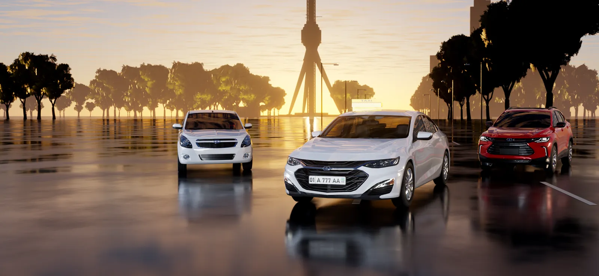
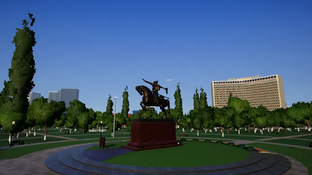
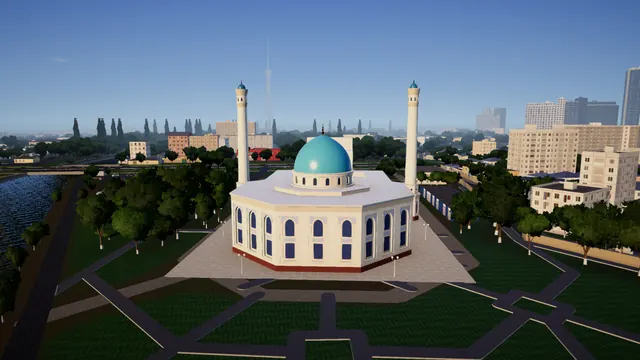
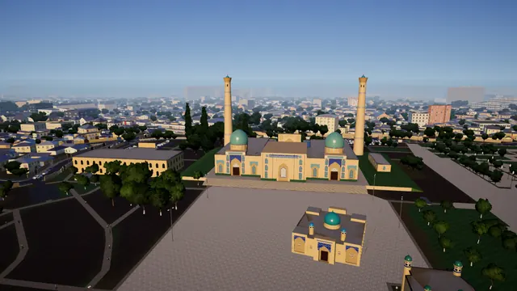
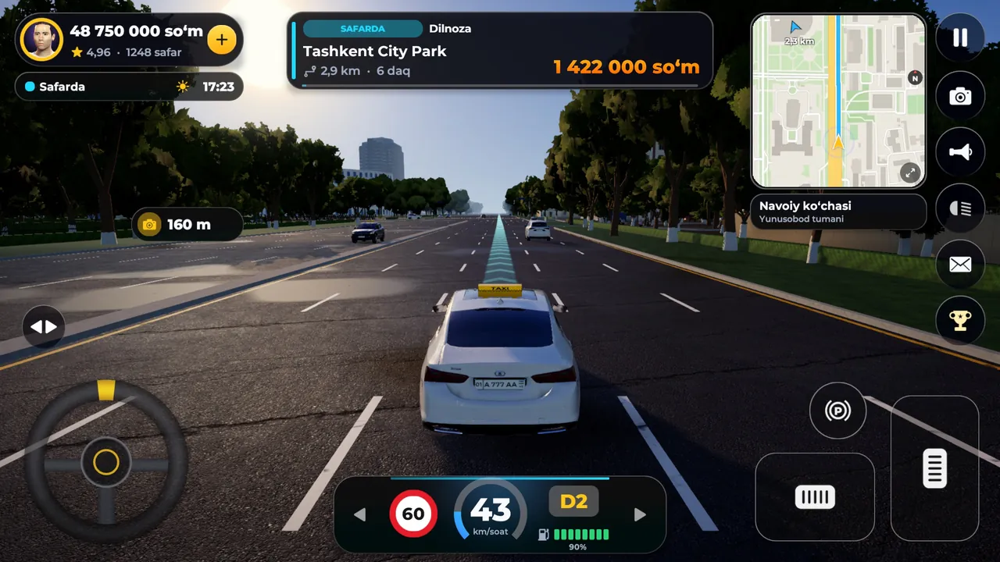
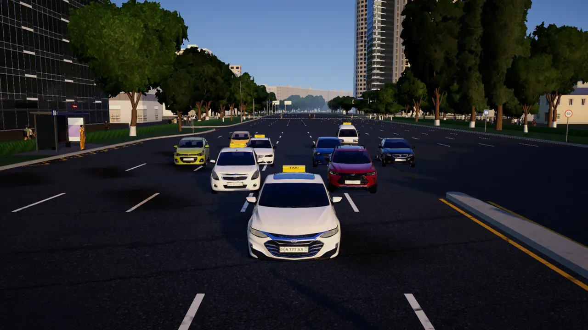

Toshkent 1:1
OpenStreetMap maʼlumotlari asosida: haqiqiy koʻchalar, koʻpriklar, mahallalar, metro bekatlari va bozorlar. Navoiy, Amir Temur, Chorsu – hammasi oʻz joyida.

Toshkentda taksi simulyatori
Toshkentning haqiqiy koʻchalarida taksi haydovchisi yoki kuryer boʻling: yoʻlovchilar va buyurtmalarni navigator bilan yetkazing, pul ishlang, prava oling va oʻnlab mashina hamda 10 ta skuter va mototsikldan oʻzingizga yoqqanini tanlang.
Bepul · iPhone va Android · Oʻzbekcha, Русский, English
Taksi haydovchisi yoki kuryerning bir kuni – birinchi buyurtmadan tungi shahargacha.
OpenStreetMap maʼlumotlari asosida: haqiqiy koʻchalar, koʻpriklar, mahallalar, metro bekatlari va bozorlar. Navoiy, Amir Temur, Chorsu – hammasi oʻz joyida.
Taksi ilovalaridagidek buyurtmalar: yoʻlovchini oling va navigator koʻrsatgan yoʻldan manzilga yetkazing. Narx oldindan maʼlum, ustiga choy puli va bonus.
Ovqat, market, dorixona, posilka va gullarni yetkazing: hamkordan oling, eshikkacha olib boring. Kuryer unvonlari, ikki buyurtma birga va kafolatlangan toʻlov.
Bepul skuterdan elektroskuter, maksi-skuter va superbaykkacha – 10 xil. Zavod ranglari, egilib burilish va yiqilganda haqiqiy fizika.
Yomgʻir, qor, tuman, boʻron va kuzgi barglar. Faslni oʻzingiz tanlang yoki bugungi Toshkent ob-havosi bilan oʻynang; qor yoqqanda buyurtmalar koʻpayadi.
Start tarifidan Elit’gacha: metan, benzin, gibrid va elektromobillar. Ijaraga oling yoki test-drayv kartasi bilan istalganini sinab koʻring.
Xameleon, perlamutr va mat boʻyoq, disklar, kuzov toʻplami, neon, tonirovka, stikerlar va davlat raqami.
Har koʻchada oʻz tezlik chegarasi, svetoforlar, tezlik kameralari va piyodalar oʻtish joylari. Patrul avval ogohlantiradi; qoida buzilsa, jarima xati POCHTA’ga keladi.
973 ta rasmiy savol bilan nazariy test, soʻng avtodromda amaliy imtihon. Prava egasi har bir safardan +15% koʻp ishlaydi.
Benzin va metan shoxobchalari, elektromobillar uchun quvvatlash stansiyalari. Bak tugay desa – navigator eng yaqin zapravkaga olib boradi.
Oʻz haydovchingizni yarating: yuzning har bir qismi, soch turmagi va kiyimlar – HAYDOVCHI boʻlimida.
Kunlik va haftalik vazifalar, 7 kunlik sovgʻa, tadbirlar, promokodlar va haftalik reyting jadvali.



Oʻyin xaritasi Toshkentning haqiqiy maʼlumotlaridan qurilgan: koʻchalar, chorrahalar, koʻpriklar, metro bekatlari, mahallalar va 40 dan ortiq diqqatga sazovor joy. Har bir tuman nomi ekranda chiqadi – shaharni bilgan haydovchi tezroq yetib boradi.

Har bir mashinaning oʻz dvigatel ovozi, quvvati va yoqilgʻi sarfi bor. Boshqaruvni oʻzingizga moslang.
Taksidan tashqari endi dastavka ham bor: buyurtmani qabul qiling, restoran yoki doʻkondan oling va mijozning eshigigacha yetkazing. Bepul skuter bilan boshlang – keyin tezroq motolarga oʻting.
Toshkent koʻchalarining sevimli taksilaridan obroʻli SUV va elektr superkarlargacha, bepul skuterdan superbaykkacha. Har biri oʻz tarifida ishlaydi: qimmatroq ulov – qimmatroq buyurtma.

Start, Komfort, Komfort+
Komfort+, Elektro, Biznes
Biznes, Premyer, Elit
Start, Komfort, Komfort+, Biznes
Oʻyindagi barcha mashina markalari, modellari va emblemalari xayoliy.
Hammasi oʻyinning oʻzidan olingan kadrlar.
1.1.7 versiyasi – katta yangilanish.
Ha, Taxi Tashkent’ni yuklab olish va oʻynash bepul. Oʻyinda reklama va ixtiyoriy xaridlar (oʻyin puli, VIP, mashinalar, reklamasiz rejim) bor – ularsiz ham bemalol oʻynash mumkin.
Android 8.0 va undan yangi telefonlarda (Google Play) hamda iOS 16 va undan yangi iPhone’larda – iPhone XS / XR va keyingi modellar (App Store). Windows kompyuterda Google Play Games ilovasi orqali oʻrnatib (qidiruvga «Taxi Tashkent» deb yozing), klaviatura bilan oʻynash mumkin.
Ha. Oʻyin mehmon hisobi bilan boshlanadi. Hisobingizni Google (Android) yoki Apple ID (iPhone) bilan bogʻlang – pul, mashinalar va prava bulutda saqlanadi va shu platformadagi yangi telefonda qaytadi.
Menyuda yoki xaritada «Dastavka»ni tanlang va smenani boshlang. Buyurtmani qabul qilib, hamkordan oling va mijozga yetkazing – summa oldindan maʼlum. Bepul skuter hammaga beriladi, xohlasangiz mashinada ham ishlaysiz.
Asosiy menyudagi PROMOKOD tugmasini bosing va kodni kiriting. Promokod havolasini telefonda ochsangiz, oʻyin kod yozilgan holda ochiladi.
Yoʻq. Oʻyindagi barcha mashina markalari, modellari va emblemalari xayoliy (Bantik, Koinot, Orzu, Yulduz va boshqalar) – ular Toshkent koʻchalari ruhida yaratilgan.
Nazariy qism Oʻzbekistonning amaldagi yoʻl harakati qoidalari asosidagi 973 ta savoldan iborat, soʻng avtodromda mashq va imtihon. Bu oʻyin: qoidalarni takrorlashga yordam beradi, lekin rasmiy imtihon oʻrnini bosmaydi.
Oʻyinning oʻzidan yoki Hisobni oʻchirish sahifasidagi yoʻriqnoma boʻyicha.
sardoormeliev@gmail.com manziliga yozing – oʻyin versiyasi va telefon modelini ham koʻrsating.
Birinchi yoʻlovchi yoki buyurtma bir daqiqalik masofada. Kalitni oling – smena boshlandi!